Desenvolvendo e publicando um site Javascript na Amazon AWS
Como hospedar uma aplicação React (javascript em geral) na Amazon, sem se preocupar com servidores.
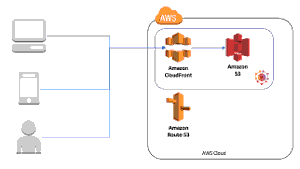
O problema
Normalmente, se quero servir arquivos, subo um servidor Nginx e pronto. Um git pull no servidor ou git push na máquina do desenvolvedor com webhook no repositório resolve tudo.
Mas deparei-me novamente com esse problema, na CARGOBR, empresa em que estou atualmente trabalhando, quando decidiu-se separar algumas aplicações entre frontend e backend, saindo do modelo clássico oferecido pelo Django, em que se resolve a interação com usuários através de templates. Eu cheguei na empresa no meio do caminho desse processo de migração. E com o crescimento das demandas, ao invés de termos essa separação estrita entre back e front, ficamos com times quase autossuficientes para cada produto, compartilhando apenas, ainda, o pessoal de UX e de projetos.
Uma necessidade que sentimos, é dar ao pessoal de Front a liberdade de rapidamente comitarem código e terem a versão publicada em um ambiente igual ao de produção. Como se trata de uma aplicação em React que consome uma API, nada muito especial é necessário.
Mas chegou-se a outra questão: como testar o software antes de publicar? Tem a saída "acessa aí", e também os testes automatizados. Atualmente não há porque fugir de primeiro fazer testes automatizados, para só então aplicar o método "acessa aí".
Esse texto é sobre como integramos na CARGOBR várias ferramentas para possibilitar aos nossos desenvolvedores frontend essa agilidade no trabalho. O que está descrito aqui abrange o desenvolvimento até a etapa de homologação, mas para pequenas aplicações, pode-se muito bem usar isso que será descrito para ter um processo automático de publicação em produção.
Soluções
Antes de chegarmos a essa solução, avaliamos algumas mais simples.
Primeiro, aproveitar a aplicação legada para hospedar a aplicação SPA (Single Page Aplication). Quase nada teria que ser feito, a não ser alguma configuração para garantir links amigáveis e um diretório exclusivo, no statics do Django. Isso teria o problema de que os desenvolvedores frontend teriam que ter a aplicação completa em sua máquina, e a cada deploy, toda a aplicação deveria ser publicada.
Também poderíamos manter um repositório separado, e no deploy, colocar esses arquivos no servidor em que está o legado. Essa abordagem ainda manteria dependência entre back e front, desnecessariamente.
Finalmente pensamos em utilizar o serviço S3 que possibilita hospedagem estática de arquivos.
Há a possibilidade de configurar, num servidor HTTP, redirecionamentos para os arquivos no S3, mas isso tiraria a flexibilidade da aplicação responder a qualquer página.
Mas separando um domínio para a aplicação, e um servidor/serviço exclusivo, as aplicações estariam independentes nos seus processos de deploy.
Tornando os arquivos públicos
Essa é a primeira parte, que nos possibilita ter a aplicação disponível.
Podemos muito bem copiar os arquivos para o S3, seja pela interface web da Amazon, seja montando o filesystem na máquina, seja usando um cliente S3 que permita jogar os arquivos lá.
Independente de como os arquivos cheguem ao S3, o importante é ter configurados os serviços que permitem serví-los publicamente.
Amazon S3
A primeira providência é ter os arquivos na Amazon, lá no S3. O que precisamos é de um bucket. Nessa tela será informada a URL em que se pode encontrar nossos arquivos, no campo 'Endpoint':
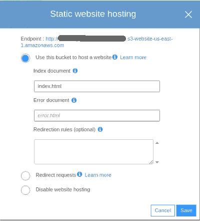
Com essas configurações, nossos arquivos podem ser acessados por qualquer cliente HTTP.
Mas é preciso permissão para acessá-los sem autenticação, publicamente:
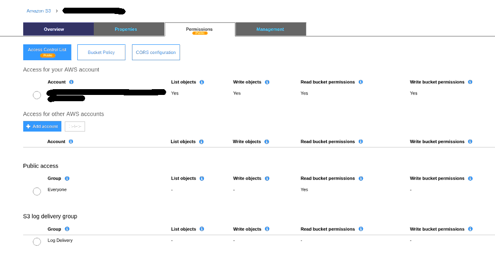
Feitas essas configurações, pode-se subir os arquivos e acessá-los no endereço indicado.
Amazon CloudFront
Uma evolução de nossa "hospedagem" é ter um grande cache na frente, servindo nossos arquivos da melhor forma possível. Enquanto o S3 é uma forma mais de armazenar os arquivos, para eventuais downloads ou acessos, o CloudFront nos provê um cache global, que propicia uma experiência melhor para o usuário, independente de onde esteja.
Vamos configurar uma distribuição, atrelada ao nosso bucket S3.
Primeiro passo, em 'General', informar o nome que iremos usar:
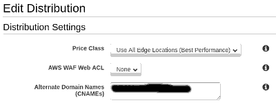
Agora, vamos configurar o SSL. Temos, a CARGOBR, na Amazon, um certificado que nos permite criar subdomínios ilimitados. Vamos escolhê-lo aqui:
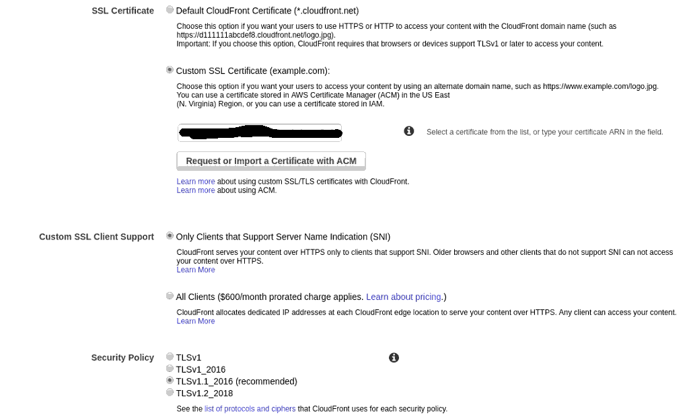
Caso não tenha ou não queira usar um certificado próprio, pode usar o domínio e certificado sugerido pela Amazon em 'Default CloudFront Certificate.
E, em sequencia, é importante informar o 'Default Root Object':
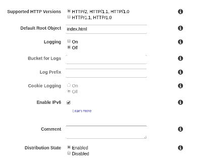
Em 'Origins', devemos indicar o endereço que nos foi fornecido na configuração do S3:
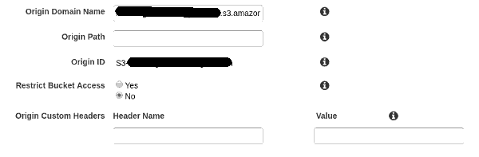
Em 'Behaviors', deve-se escolher o 'Origin' e selecionar 'GET, HEAD' em 'Allowed HTTP Methods':
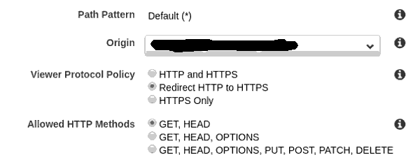
E, finalmente, o 'pulo do gato'. Essa configuração nos permitirá servir qualquer página inexistente, sem erros, redirecionando para o index.html, permitindo, dessa forma, que uma aplicação feita em React, por exemplo, possa fazer seus roteamentos, e de quebra, não criar problemas de indexação em mecanismos de busca:
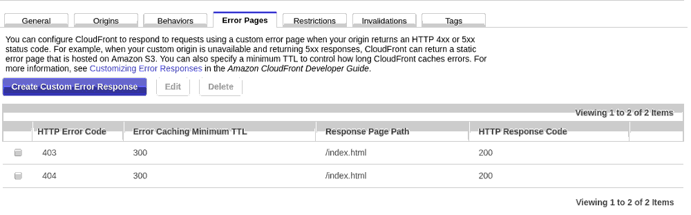
Devemos criar a página para acesso proibido:
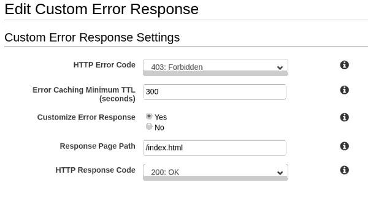
E a página para não encontrado:
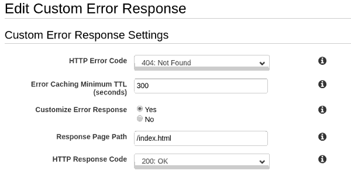
Amazon Route 53
Vamos configurar o DNS, para que o nome escolhido possa ser usado por qualquer "navegante":
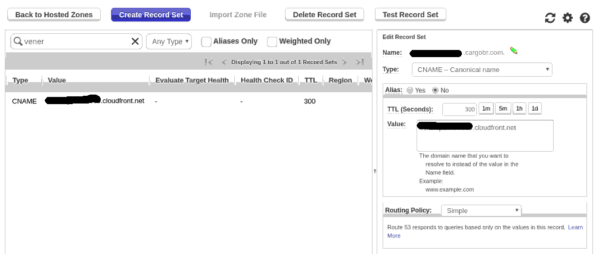
Resumão
O que precisamos, é garantir essas configurações:
Bucket S3
* Properties
* Static Web Site Hosting
* Permissions
* Public Access
* Everyone
* Read bucket permissions
CloudFront
* Origins
* Associar ao bucket S3
* SSL
* Associar ao certificado geral da empresa, ou usar o padrão do CloudFront
* Behaviors
* Origin - bucket S3
* Viewer Protocol Policy
* Redirect HTTP to HTTPS
* Allowed HTTP Methods
* GET, HEAD
* Error Pages
* 403
* Customize Error Response
* Response Page Path
* /index.html
* HTTP Response Code
* 200: OK
* 404
* Customize Error Response
* Response Page Path
* /index.html
* HTTP Response Code
* 200: OK
Route53
* name
* Preencher name com nome desejado para o domínio
* Type
* CNAME
* Alias
* NO
* Value
* domínio gerado no CloudFront (p. ex., xxxxxxxxxxxxx.cloudfront.net)
Bitbucket
E que tal deploiar assim que a master receba uma atualização? Usamos Bitbucket na CARGOBR, então vai um exemplo usando os Pipelines dele.
Você ira, na verdade, configurar uma imagem docker para executar seus testes e fazer o deploy. O primeiro passo que falhar, por exemplo um linter ou um teste, a operação toda é finalizada.
Para isso, basta criar um arquivo chamado bitbucket-pipelines.yml, na raiz de seu repositório:
clone:
depth: 1
options:
max-time: 30
pipelines:
default:
- step:
name: Build assets
image: node:9.11-alpine
caches:
- node
script:
- npm install
- npm run-script test
- npm run-script build
artifacts:
- dist/**
- step:
name: Deploy assets to AWS S3
image: python:3.6-alpine3.7
deployment: test
script:
- pip install awscli
- aws s3 sync --acl public-read --content-encoding utf-8 --delete dist/ $CARGOBR_S3_BUCKET
- aws cloudfront create-invalidation --distribution-id $CARGOBR_CF_DISTRIBUTION_ID --paths="/*"
O importante aqui é que nosso processo está separado em dois passos. Primeiro (primeiro step) construímos a aplicação e preservamos o diretório dist (é isso que o artifacts faz). Depois, no segundo step, fazemos o deploy propriamente dito, com a ajuda do comando aws.
Para que tudo isso funcione, demos configurar as seguintes variáveis de ambiente nas configurações do repositório, em settings/PIPELINES/Environment variables:
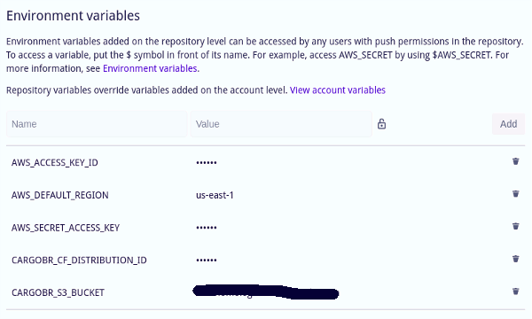
Os nomes das variáveis são quase todos bem claros, à exceção da variável CARGOBR_CF_DISTRIBUTION_ID, que deve contem o ID da distribuição criada no CloudFront.